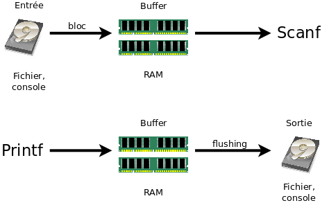

Ce tutoriel a pour but de mieux vous faire comprendre ce qui se passe et comment réagir lorsque votre code compile, mais ne s'exécute pas correctement. Nous en profiterons pour tordre le cou à quelques mauvaises pratiques sources d'erreur. :pirate:
Nous verrons en premier lieu ce qui peut amener un programme à « crasher », puis les erreurs fréquentes empêchant nos chers codes de tourner. Nous terminerons par de nombreux conseils de prévention pour éviter de tomber dans de mauvaises situations.
Notez que le traitement et la correction des erreurs est un sujet extrêmement vaste. Ce tutoriel n'est qu'une petite introduction, n'hésitez pas à creuser le sujet par vous-mêmes !
Nous allons partir à la chasse aux bugs, soit. Mais qu'est-ce qu'un bug, concrètement ? Il existe plusieurs définitions de ce terme. Nous proposons la suivante :
Ainsi, dès que votre programme fait quelque chose que vous ne voulez pas, nous dirons qu'il s'agit d'un bug. C'est un concept très large, qui peut aller d'un affichage moins joli que celui que vous imaginiez à un plantage brutal du programme. L'appréciation de ce qui est un bug ou non peut parfois être subjective : si votre logiciel favori ne se comporte pas comme vous vous y attendez, vous conclurez à un bug. Mais il s'agit peut-être d'un comportement voulu par l'auteur du programme ! Il arrive que les développeurs, lorsqu'on leur signale un bug, rétorquent avec humour « ce n'est pas un bug, c'est une fonctionnalité » (“it's not a bug, it's a feature”). Ainsi, ils prétendent parfois que les plantages inexpliqués de leurs programmes sont introduits exprès. Bien entendu, il n'est pas recommandé de faire ceci. ^^
Dans ce tutoriel, nous allons nous concentrer sur les bugs rencontrés le plus couramment par les débutants en C : les comportements indéterminés.
Qu'est-ce qu'un comportement indéterminé ?
Pour l'expliquer, il faut dans un premier temps présenter la norme du langage C. La norme (pour faire court) est le document qui répond à la question : « qu'est-ce que le langage C ? » Elle explique chaque aspect du langage, depuis la liste des directives du préprocesseur jusqu'à la signification des fonctions de la bibliothèque standard. Il s'agit d'un gros document, rédigé en anglais. Elle constitue la référence ultime pour le langage C : ce qui est du C est ce qui obéit à la description donnée dans cette norme, ni plus, ni moins.
Pour être tout à fait franc, il ne s'agit pas de la norme définitive, mais d'un brouillon (draft) de celle-ci. Il est extrêmement proche de la « vraie » norme, dont le téléchargement est payant. À moins que vous ne vouliez développer un compilateur C certifié, le draft gratuit conviendra parfaitement. :)
Ainsi donc, la norme est la définition complète du langage C. Qu'en est-il de ces fameux comportements indéterminés ? Il arrive que la norme ne spécifie pas le comportement que doit avoir une certaine instruction du langage C. Voyons un exemple simple :
Citation : La norme, point 6.7.2.2
All declarations that refer to the same object or function shall have compatible type; otherwise, the behavior is undefined.
Citation : Traduction libre
Toutes les déclarations désignant un même objet ou une même fonction devront avoir des types compatibles ; autrement, le comportement est indéterminé.
Cette phrase signifie que si une fonction est déclarée plusieurs fois dans un même programme, tous les types sous lesquels elle est déclarée devront être équivalents. Il arrive par exemple que le prototype d'une même fonction apparaisse dans deux fichiers d'en-têtes différents. Cette situation est autorisée à condition que les prototypes de cette fonction soient les mêmes, ou reviennent au même.
Et sinon, que se passe-t-il ? Le compilateur renvoie une erreur ?
La norme vous donne la réponse : si cette règle n'est pas respectée, le comportement est indéterminé (the behavior is undefined). Cela signifie que la norme ne prévoit pas ce qui arrive ; chaque compilateur peut donc faire ce qu'il veut. En d'autres termes, tout, absolument tout peut arriver. Le compilateur affichera probablement un message d'erreur, mais il n'est pas toujours capable de détecter ce type de situations. Il se pourra donc que votre programme compile sans le moindre problème... Et il est impossible de prévoir ce qui arrivera lorsque la fonction aux multiples prototypes sera appelée !
Le gros danger des comportements indéterminés est le suivant : lorsque votre programme a un comportement indéterminé, il se peut qu'il fonctionne tout à fait correctement.
C'est plutôt positif, non ? Nous avons fait une erreur, mais finalement tout se passe bien !
Personne ne vous garantit que tout se passera bien dans le futur ! Après tout, qu'est-ce qui vous fait croire que la fonction printf affiche du texte sur la sortie standard ? Le fait que ce soit une fonction du langage C... Et donc qu'elle soit définie dans la norme. Si cette même norme anonce : « dans cette situation, tout peut arriver », alors il y a danger. Peut-être que votre programme plantera demain, ou qu'il plantera sur la machine de votre voisin... En d'autres termes, ce n'est pas parce qu'un code a l'air de marcher qu'il fonctionne vraiment. Les logiciels évitent parfois les plantages par pure chance.
Si votre programme a un plantage brutal, ou affiche des caractères bizarres, il a de grandes chances d'avoir un comportement indéterminé. Dans la sous-partie suivante, nous verrons quelques UB (undefined behaviors, comportement indéterminé en anglais) courants. Dans les deux dernières sous-parties, nous apprendrons à nous en prémunir, dans une certaine mesure.
Nous allons voir ici deux grandes catégories d'erreurs : celles concernant la mémoire, et celles concernant les fichiers. J'aborderai aussi, pour la culture, quelques petits problèmes plus rares, mais qui peuvent arriver.
Jouons avec la mémoire
La mauvaise manipulation des pointeurs est un grand classique. Comme vous le savez tous, les pointeurs contiennent des adresses de cases mémoires, et ces adresses sont des entiers. Pourtant, le code suivant est faux :
#include <stdio.h>
int main(void)
{
int *mon_pointeur = 0x13374242;
*mon_pointeur = 170;
printf("%d\n", *mon_pointeur);
return 0;
}
Ici, j'ai déclaré un pointeur contenant l'adresse-mémoire 13374242 (en hexadécimal). J'ai ensuite demandé à écrire dans cette case mémoire, puis à afficher la valeur que j'y avais écrite. Ce code est faux car je n'ai pas le droit d'écrire à une telle adresse ! La case en question pourrait très bien appartenir à un autre programme, avec lequel je n'ai pas à interférer. Si vous tentez de compiler puis d'exécuter ce code, il est probable que votre système d'exploitation ferme brutalement votre programme pour l'empêcher de faire des dégâts. Il vous parlera alors d'une erreur de segmentation (segmentation fault, ou segfault pour faire court). La majorité des « crashes » que vous pouvez observer dans vos logiciels favoris sont dus à des segfaults.
Il faut donc toujours prendre garde à manipuler des adresses qui vous appartiennent. On les appelle les adresses valides, ce sont :
les adresses de vos variables, locales et globales ;
les adresses des cases contenues dans les blocs renvoyés par un appel réussi à malloc, calloc ou realloc ;
les adresses des cases de tableaux, locaux et globaux ¹.
¹ En vérité, les cases de tableaux sont des variables particulières. Ce troisième point est donc redondant, mais il est toujours bon à rappeler. :)
Toutes les autres adresses sont invalides ; y lire ou écrire aura un comportement indéterminé. Notez que NULL est toujours une adresse invalide.
Bien entendu, il arrive rarement que l'on déclare un pointeur « en dur » comme dans le code précédent. Mais il est facile de se laisser distraire, voyez plutôt...
#include <stdio.h>
int main(void)
{
int i = 0;
int tableau[4] = {1, 2, 3, 4};
int somme = 0;
/* FAUX ! */
for(i = 0; i <= 4; i++)
{
somme += tableau[i]; /* équivalent à somme += *(tableau+i), pour rappel */
}
printf("%d\n", somme);
return 0;
}
Ici, nous déclarons un tableau de quatre cases : tableau[0], tableau[1], tableau[2], tableau[3]. Les indices d'un tableau à n cases vont de 0 à n-1. Aussi, lorsque i vaudra 4 dans la boucle, nous tenterons de lire tableau[4]... Qui est en réalité la case mémoire située immédiatement après notre tableau. Et nous n'avons aucune idée de ce qu'elle contient !
Le programme va donc planter ?
Pas nécessairement, puisqu'il s'agit d'un comportement indéterminé. Tout peut arriver. En l'occurrence, il est assez probable que tableau[4] désigne soit la variable i, soit la variable somme, selon votre processeur, votre système d'exploitation et votre compilateur. Vous vous retrouverez donc avec le double de la somme voulue, ou bien avec somme+4... L'origine d'un tel problème peut être un véritable mystère pour le programmeur non-averti !
Ne pas tester les retours de fopen ou malloc
Un autre cas de figure menant à l'écriture à une adresse invalide est le suivant :
Si le fichier « donnees.txt » existe bel et bien, tout se passera correctement. Mais qu'en est-il si le fichier n'existe pas, ou bien si nous n'avons pas le droit de le lire ? La fonction fopen va alors renvoyer NULL, qui est toujours une adresse invalide ! Lorsque nous passons cette adresse à la fonction fgets, cette dernière tentera innocemment de lire la case pointée par NULL... Et déclenchera un plantage du programme ! Ainsi, chaque fois que vous appelez une fonction renvoyant un pointeur, il faut systématiquement vérifier que ce pointeur n'est pas NULL. Cette remarque est également valable pour malloc et consorts.
Nous verrons dans la dernière sous-partie de ce tutoriel comment se prémunir contre les fonctions dont l'appel échoue. Pour le moment, nous allons voir un dernier cas de figure pouvant mener à manipuler des adresses invalides.
Renvoyer l'adresse d'une variable locale
Une dernière manière d'obtenir une adresse invalide :
#include <stdio.h>
/* Ce code est FAUX, Archi-FAUX, mais il a des chances de fonctionner tout de même ! */
int *minimum(int a, int b)
{
if(a < b)
{
return &a;
}
else
{
return &b;
}
}
int main(void)
{
int *ptr = minimum(3, 4);
printf("%d\n", *ptr);
return 0;
}
Vous avez sans doute remarqué que ce code est inhabituel... L'idée est la suivante : nous avons une fonction minimum, qui prend en paramètre deux entiers et renvoie l'adresse du plus petit d'entre eux. Puis, nous appelons cette fonction avec deux constantes, 3 et 4... Mais les constantes ne possèdent pas d'adresses ? o_O
Le piège ici est que minimum renvoie l'adresse de l'un de ses paramètres. Or, dans une fonction, les variables locales et les paramètres sont des objets temporaires. Sitôt que nous sortons de la fonction, ils cessent d'exister... Et les cases mémoires qu'ils occupaient sont alors réutilisées pour autre chose. Elles deviennent donc invalides pour nous.
Remarquez que le code précédent a des chances de fonctionner correctement chez vous. La raison est simple : bien que la case mémoire dont nous renvoyons l'adresse n'est plus utilisée, elle n'est pas encore affectée à un autre usage au moment de l'affichage. Elle contient donc toujours son ancienne valeur, « 3 », qui s'affichera ainsi correctement. Cependant, il s'agit ici de pure chance. Il est tout à fait possible que l'OS récupère cette case pour une autre fonction de votre programme. Nous avons donc une belle illustration du fait qu'un code très dangereux peut avoir l'air de marcher. Un code qui s'exécute correctement n'est donc pas synonyme d'un code juste.
Jouons avec les fichiers
Nous passons maintenant à un tout autre type de problème.
Connaissez-vous fflush ? Il s'agit d'une fonction vidant le tampon (buffer) d'un fichier.
Qu'est-ce qu'un buffer ?
Lorsque vous écrivez dans un fichier, il est rare que vos données soient envoyées directement sur le disque dur. En effet, l'accès au disque est une action relativement lente ; les systèmes d'exploitation préfèrent donc attendre d'avoir plusieurs choses à écrire pour envoyer effectivement les données sur le disque. Dans l'intervalle, les octets à écrire restent dans un buffer, c'est-à-dire une zone de la mémoire vive. Le contenu du buffer est écrit sur disque dès que l'une des trois situations suivantes survient :
le buffer est plein (impossible à contrôler) ;
la fonction fflush est appelée sur le flux de fichier ;
pour certains flux², une fin de ligne (caractère ' ') est envoyée.
² Les flux en question sont dits line buffered ; ce sont notamment les flux console (stdin, stdout et stderr). Les autres flux sont dits block buffered, ce sont surtout les fichiers disque. On peut passer un flux en line-buffered ou en block-buffered grâce aux fonctions setbuf et setvbuf, mais seuls les programmeurs expérimentés devraient s'y risquer. Enfin, il existe des flux sans aucun buffer (non-buffered), mais leur utilisation est peu courante.
La fonction fflush sert donc précisément à cela : elle force le système d'exploitation à vider le buffer, provoquant ainsi l'écriture des données sur le disque dur.
Notez qu'il existe également un buffer pour accéder à un fichier en lecture. Plutôt que d'aller chercher les données sur le disque au fur et à mesure que vous les demandez, le système préfère lire tout un bloc d'octets en une seule fois. Le contenu de ce bloc est alors envoyé vers le buffer, dans lequel les fonctions telles que fgets vont venir lire. Lorsque le buffer est vide, un nouveau bloc est lu depuis le disque.
Voici un schéma de la bufferisation (utilisation d'un buffer) des flux :

Images trouvées sur Open Clipart, dans le domaine public.
Il y a un buffer par flux, c'est-à-dire un buffer pour chaque variable FILE*.
Cette bufferisation s'applique également aux entrées et sorties sur la console. Par conséquent, le texte d'un printf ne s'affichera qu'après un flush (retour à la ligne, buffer plein, appel à fflush) du flux stdout. Il en va de même pour le flux d'erreur stderr. Dans le cas de l'entrée clavier, si le buffer est vide, le programme s'arrête et demande à l'utilisateur de taper une ligne. Cette ligne (terminée par le caractère ' ') est ensuite copiée dans le buffer où elle est lue par scanf et consorts.
Ce comportement est à l'origine de nombreuses erreurs impliquant la fonction scanf. En effet, si, lors d'un appel à scanf, l'intégralité du buffer n'est pas lue, l'appel suivant lira la fin du buffer et ne s'arrêtera donc pas pour laisser l'utilisateur taper quelque chose. Il s'agit d'un problème fréquemment rencontré par les débutants ; voici donc une liste d'articles traitant du sujet plus en profondeur :
De nombreux programmeurs conseillent de vider le buffer d'entrée avant chaque utilisation de scanf. Nous pourrions être tentés d'utiliser la fonction fflush sur stdin pour le faire, mais...
Pour certains compilateurs, l'effet va être de vider le buffer. Dans ce cas, l'endroit où la lecture reprend sur le disque n'est pas spécifié. Sur d'autres plates-formes, l'effet sera totalement aléatoire. Dans tous les cas, vous n'avez aucune idée de ce qui va se passer, abstenez-vous donc d'appeler fflush sur des flux en entrée, en particulier stdin.
Il ne faut pas utiliser la fonction fflush, mais plutôt quelque chose du style :
void vider_buffer(void)
{
int c;
do
{
c = fgetc(stdin);
} while(c != EOF && c != '\n');
}
Les fichiers ouverts en lecture-écriture
Les comportements indéterminés, comme on l'a vu, peuvent survenir aussi bien au sein du langage lui-même que dans la bibliothèque standard. Voici un nouvel exemple de ce dernier cas : si vous ouvrez un fichier en lecture-écriture (modes "r+" ou "w+"), il doit suivre des règles bien précises.
Règle 1. Pour faire une lecture juste après une écriture, il faut d'abord appeler fflush ou déplacer le curseur du fichier (avec fseek par exemple).
Règle 2. Pour faire une écriture juste après une lecture, il faut d'abord déplacer le curseur du fichier (avec fseek par exemple), sauf si la lecture a atteint la fin du fichier (EOF).
Le non-respect de ces deux règles entraîne un comportement indéterminé. Pour faire simple, il est préférable de repositionner le curseur du fichier chaque fois que l'on passe de « lecture » à « écriture », et inversement. D'une façon générale, les fichiers ouverts en lecture-écriture sont délicats à manier et source d'erreur. Les cas où leur utilisation est justifiée sont assez rares, il est donc recommandé de les éviter lorsque c'est possible. :)
Les changements de valeur multiples
Un dernier comportement indéterminé, peut-être plus ésotérique : les affectations multiples. La norme spécifie que toute instruction ne peut changer la valeur d'une variable qu'une seule fois, au maximum. Ainsi, des lignes telles que :
i = i++;
ont un comportement indéterminé. La valeur de i est en effet incrémentée une première fois par l'opérateur ++, puis changée par l'affectation =. La traduction que devrait avoir ce genre d'instructions en assembleur n'est pas claire ; aussi, le langage C ne précise pas la signification qu'elle doit avoir. Tout peut donc arriver, encore une fois, c'est donc une très mauvaise idée.
Ce genre d'erreurs survient parfois lorsqu'on tente d'écrire des oneliners, ces fonctions en une seule ligne. Prenons par exemple cet essai de fonction supprimant le premier caractère d'une chaîne :
void *my_chop(char *s)
{
while(*s = * ++s) {}
}
Si vous êtes amateurs de ce genre de lignes cryptiques, les changements de valeurs multiples en une unique instruction ne sont jamais bien loin. :)
Nous avons fait un petit tour des comportements indéterminés et autres erreurs courantes en langage C. Cette liste est évidemment loin d'être exhaustive ; un recensement de toutes les erreurs possibles en langage C serait bien trop long pour être exploitable. Ceux qui veulent aller plus loin avec les UB peuvent consulter cette série d'articles : ce que tout programmeur C devrait savoir sur les comportements indéterminés - partie 2 - partie 3.
Nous allons plutôt voir des conseils généraux pour prévenir les erreurs qui peuvent survenir. Nous verrons également comment faciliter la détection et la résolution des problèmes. En avant ! :pirate:
Pour commencer cette partie, signalons qu'un compilateur n'est pas un débogueur. Certains zéros croient que le débogueur correspond à ce que M@teo21 nomme « la zone de la mort », c'est-à-dire l'endroit où les messages d'erreur apparaissent dans Code::Blocks. Il n'en est rien : cette zone affiche les messages du compilateur. Il vous explique pourquoi ce dernier n'a pas pu compiler votre programme.
Je vais vous révéler un secret : le compilateur est votre meilleur ami.
Loin d'être un adversaire pénible qui vous empêche de faire ce que vous voulez, le compilateur est un allié précieux qui peut vous signaler certains problèmes dans votre code.
Cependant, si l'on garde les réglages par défaut, votre compilateur n'est pas très bavard. Nous pouvons lui demander de nous signaler tous les problèmes qu'il voit !
Régler son compilateur
Voici une liste d'options de GCC permettant d'avoir plus de messages d'avertissement (warnings) sur votre code :
Si vous compilez à la main depuis votre terminal ou votre éditeur, vous pouvez ajouter les options suivantes à la ligne de commande de GCC.
Si vous utilisez un Makefile, vous pouvez rajouter ces options à la ligne de commande qui effectue la compilation. :)
Dans Code::Blocks, cliquez sur le menu “Settings”, puis sur “Compiler”, puis sur l'onglet “Compiler” (pas deux fois le même :p ), puis sur “Other options”. Vous pouvez alors copier/coller les options que vous voulez passer à GCC.
Si vous souhaitez en apprendre plus sur les options de GCC, vous pouvez consulter la documentation officielle. Vous y trouverez notamment la signification de chacune de ces options, ainsi que d'autres réglages qu'il est possible de faire pour rendre GCC encore plus sensible.
Sous un système de type Unix (GNU/Linux, BSD...), vous pouvez également taper « man gcc » dans un terminal.
Et si j'utilise Visual C++ ?
Allez dans les propriétés de votre projet, cliquez sur « C/C++ » puis sur « général ». Vous pouvez alors choisir le niveau d'avertissement du compilateur. Nous vous recommandons de le mettre à 4.
Comprendre les messages bizarres
Ces options vont certainement faire apparaître de nouveaux messages d'erreur, introduits par le mot “Warning:” (« Attention : »). En d'autres termes, ce ne sont pas des erreurs fatales (empêchant la compilation), mais des problèmes potentiels que le compilateur a détecté. Il arrive parfois que le compilateur panique et vous affiche un warning alors qu'il n'y a pas de problème. La règle est simple : vous pouvez ignorer un warningsi vous comprenez pourquoi il a été émis et pourquoi ça n'est pas un vrai problème.
Quoi qu'il en soit, il est fortement recommandé de chercher à comprendre la signification des messages d'erreur. Ne vous contentez pas de poster votre code avec le message sur le forum : Internet est plein de ressources ! Si vous comprenez l'anglais, vous pouvez comprendre la signification du message ; ils n'ont généralement rien de mystérieux. Sinon, les programmeurs plus expérimentés vous diront qu'il faut s'y mettre (avec raison !), mais vous pouvez également tenter d'utiliser un traducteur automatique. N'hésitez pas à copier votre message d'erreur dans un moteur de recherche et à lire le manuel de votre compilateur. Des recherches telles que “GCC error messages explained” donnent des pages intéressantes à lire. :)
Les warnings et autres messages
Pour vous encourager à déchiffrer les messages de votre compilateur par vous-mêmes, je vous livre ici quelques traductions des messages les plus courants. N'hésitez pas à chercher ailleurs la signification des autres messages que vous obtenez !
warning: implicit declaration of function ‘****’
error: redefinition of ‘****’
undefined reference to ‘****’
error: ‘****’ undeclared (first use in this function)
Il s'agit d'une erreur classique liée au comportement de GCC : vous utilisez une fonction ou une variable non-déclarée.
Voici le problème : lorsque vous appelez une fonction non-déclarée (premier warning), GCC suppose tout de même que la fonction existe. Il donnera des types par défaut aux arguments et à la valeur de retour. Le fait est que GCC se trompera à coup sûr au sujet de ces types, et l'appel de fonction ne pourra donc pas se faire correctement. Si de plus la fonction est déclarée plus bas avec des types différents (deuxième warning), GCC aura deux prototypes différents pour une même fonction, ce qui est une erreur (le tout premier exemple de ce tutoriel !). Enfin, si votre fonction non-déclarée est en fait inexistante, GCC sera bien embêté pour trouver le code de la fonction à appeler au moment de l'édition des liens. Il renverra donc le troisième message d'erreur.
Le dernier message d'erreur concerne l'utilisation de variables inexistantes.
warning: comparison between signed and unsigned integer expressions
warning: comparison of unsigned expression >= 0 is always true
Ces warnings surviennent lorsque vous comparez un entier signé (positif ou négatif) avec un entier non-signé (toujours positif). Ce type de comparaisons peut présenter des risques, GCC s'attend donc à ce que vous appliquiez un transtypage pour montrer que vous savez ce que vous faites.
warning: unused variable ‘****’
warning: ‘****’ is used uninitialized in this function
Ces warnings sont assez transparents. Dans le premier cas, vous avez une variable que votre fonction n'utilise jamais. Si cette fonction n'est pas encore finalisée et que vous êtes conscients de ce que vous faites, c'est normal. Autrement, il y a certainement une instruction de votre code qui ne fait pas ce à quoi vous vous attendez. Le deuxième warning survient lorsque vous essayez de lire une variable qui n'a pas encore de valeur. Le résultat d'une telle opération est complètement aléatoire, et ce n'est certainement pas ce que vous voulez. Vous avez donc un warning.
error: expected ‘;’, identifier or ‘(’ before ‘*’
error: expected declaration or statement at end of input
warning : missing braces around initializer
warning: suggest braces around empty body in an ‘if’ statement
Ces erreurs et warnings signalent qu'il y a des points-virgules ; ou des accolades {} en trop ou manquantes. Dans l'ordre :
il manque un point-virgule, probablement après une déclaration de structure ;
il manque une accolade fermante quelque part (ne vous fiez pas au numéro de ligne de cette erreur) ;
vous initialisez un tableau à deux dimensions comme un tableau à une dimension ;
vous avez un point-virgule en trop immédiatement après un bloc if, while, for...
error: invalid conversion from ‘void*’ to ‘int*’
warning: passing argument N of ‘****’ discards ‘const’ qualifier from pointer target type
warning: expected ‘char *’ but argument is of type ‘const char *’
Les erreurs de pointeurs sont toujours les plus rigolotes. :) Vous utilisez un pointeur du mauvais type à un endroit donné, ce qui donnera presque sûrement une erreur de segmentation à l'exécution.
La première erreur révèle que vous compilez en C++ et non en C. Ces deux langages sont presque compatibles, mais il subsiste de menues différences, telles que celle-ci. Le C++ ne tolère pas qu'un pointeur void* soit converti implicitement en un autre type de pointeur. Le C, pour sa part, l'autorise et s'en sert notamment pour le retour de la fonction malloc. Vous devriez donc avoir cette erreur sur un appel à malloc.
Si vous le souhaitez, vous pouvez demander au compilateur de générer une erreur lorsqu'il est en mode C++ grâce à ces directives :
#ifdef __cplusplus
#error Vous utilisez un compilateur C++ pour compiler un code C.
#endif
Les deux autres warnings surviennent lorsque vous tentez d'utiliser un pointeur à la place d'un autre, un int* pour un char* par exemple. Notez d'ailleurs qu'il est interdit de passer un pointeur const là où un pointeur de données non-constantes est attendu ! Autrement, il deviendrait possible de modifier une valeur constante... Ce qui résulterait là encore en une segfault.
error: lvalue required as left operand of assignment
warning : operation on * may be undefined
Les instructions que vous avez tapé n'ont pas de sens. Relisez attentivement la ligne indiquée, vous devriez rapidement comprendre ce qui se passe. :) Le premier message dénote probablement une confusion entre = et ==.
Je vous recommande en outre la lecture du tutoriel Nanoc sur le compilateur g++. En effet, g++ est la version C++ du compilateur gcc, et son tutoriel n'est en fait pas spécifique au C++ : tout ce qu'il dit est valable avec gcc.
Le débogueur (debugger) vous permet d'exécuter votre programme pas à pas, de mettre en pause l'exécution pour contrôler son état, puis de la reprendre. Il permet d'afficher la pile des appels : « main a appelé initialiser qui a appelé fgets qui a écrit à une adresse invalide ». Il permet également de vous prévenir chaque fois qu'une variable est lue ou modifiée. D'une façon générale, il permet d'exécuter votre programme en contrôlant tous les aspects de son exécution, même les plus avancés.
Même si vous n'en faites pas une utilisation très poussée, c'est un bon investissement d'apprendre à se servir du débogueur. Si une segfault survient, il peut vous indiquer la fonction, et même la ligne où le problème est apparu, ce qui peut être d'une grande aide. Il existe de nombreux tutoriels pour l'utilisation de GDB sur le Web.
Notez qu'il existe plusieurs types de débogueurs. GDB est un débogueur source : il permet d'exécuter votre programme ligne par ligne, de visualiser les valeurs des variables, etc. Mais il existe également des débogueurs mémoire, qui vous aident à traquer les fuites de mémoires et les lectures/écritures à des adresses invalides. Valgrind est l'un d'entre eux.
Comme vous l'avez vous dans le bestiaire des erreurs courantes, les pointeurs et les fichiers sont la source de nombreux problèmes. Nous allons donc introduire un maximum de tests autour de ces aspects du code. Dès que nous verrons quelque chose qui se passe mal... Tiens au fait, que faire quand tout va mal ?
C'est vrai, ça ! On me dit toujours de tester les retours de malloc et fopen, mais je ne sais jamais quoi faire s'ils échouent ! Que faire ?
L'important est d'expliquer à l'utilisateur (autrement dit, à vous !) ce qui s'est passé. Plus vous donnerez de détails sur la panne, plus vous pourrez la corriger facilement. Dans cette optique, la variable errno et la fonction perror sont vos amies. Voyons comment elles fonctionnent.
La variable errno est globale, on peut y accéder depuis tout point du programme. Chaque fois qu'une fonction de la bibliothèque standard, telle que fopen, rencontre un problème, un code d'erreur est stocké dans errno. Par exemple, sous GNU/Linux, si fopen est appelée avec un second argument incorrect, errno est changée en EINVAL. Cet EINVAL est une macro (#define) définissant un entier, dont la valeur signifie « argument INVALide ».
La variable errno, ainsi que quelques codes d'erreurs, sont déclarées dans l'en-tête errno.h, qui est lui-même inclus dans de nombreux en-têtes standard (notamment stdio.h). Cependant, la majorité des codes d'erreur dépendent du système, seuls quelques-uns sont définis directement par la norme du C. Cet état de fait rend l'utilisation d'errno délicate. Pour simplifier le diagnostic d'erreurs, les fonctions perror (déclarée dans stdio.h) et strerror (string.h) sont à notre disposition.
La fonction perror affiche sur la sortie d'erreur standard un message d'erreur dépendant de la valeur d'errno. Voici un exemple d'utilisation :
#include <stdio.h>
int main(void)
{
FILE *f = fopen("fichier.txt", "kzf");
if(f != NULL)
{
fputs("Bonjour les amis !", f);
fclose(f);
}
else
{
fprintf(stderr, "Erreur fichier %s, ligne %u, ", __FILE__, __LINE__);
perror("la fonction fopen a rencontré un problème ");
}
return 0;
}
Résultat :
Erreur fichier main.c, ligne 13, la fonction fopen a rencontré un problème : invalid argument
Comme vous le voyez, la fonction perror prend en paramètre une chaîne de caractères qui est affichée avant le message. Si vous souhaitez plutôt récupérer la chaîne correspondant à l'erreur, il vous suffit d'appeler la fonction strerror.
Vous disposez à présent d'un outil puissant pour comprendre d'où viennent vos erreurs !
Il existe une fonction similaire à strerror pour la SDL : SDL_GetError().
Une fonction similaire existe pour SDL_TTF : TTF_GetError.
Qu'est-ce que stderr ? Qu'est-ce que le flux d'erreur standard ?
Lorsque votre programme démarre, au début de la fonction main, trois fichiers sont déjà ouverts sans que vous n'ayez rien à faire. Les objets FILE* correspondants sont nommés stdin, stdout, et stderr. Ils s'appellent respectivement :
le flux d'entrée standard, qui sert au programme à lire les données dont il a besoin pour travailler ;
le flux de sortie standard, qui lui permet d'écrire le résultat de son traitement ;
et le flux d'erreur standard, qui permet d'afficher des messages d'erreur, sans les mélanger avec le résultat du programme.
Par défaut, ces fichiers sont redirigés vers la console : lire dans stdin ou écrire dans stderr/stdout revient donc à lire au clavier ou à écrire dans la console. Mais il est possible (et même très courant) de rediriger l'entrée ou les sorties standard vers des fichiers ! Sous un système de type Unix (tels que GNU/Linux, BSD, Mac OS), nous procéderions comme suit :
wc < /var/log/access.log > statistiques.txt
Le programme « wc » (word count) aura alors pour entrée standard le fichier « /var/log/access.log », et pour sortie standard « statistiques.txt ». La conséquence de ceci est que les fonctions printf & scanf liront pour lui dans ces fichiers, plutôt que dans le terminal.
C'est la raison pour laquelle il est si difficile de faire des programmes console interactifs en C : les fonction de stdio.h ne sont pas prévues pour cela ! Ainsi, l'opération « effacer le contenu de la console » paraît à première vue raisonnable, mais perd tout son sens si la sortie du programme est un fichier. Voilà pourquoi les tutoriels ne disent pas comment effacer la console ou écrire du texte en couleur : dans la norme du C, ces instructions n'ont pas lieu d'être.
Tenez des journaux intimes !
Les explications précédentes sont bien adaptées au programme en console de type « filtre », qui lisent une certaine entrée et écrivent une certaine sortie. Mais qu'en est-il des programmes interactifs, tels que les deamons ou les programmes graphiques ? Ceux qui ont déjà administré des serveurs le savent : ce genre de programmes écrivent des journaux, aussi appelés “logs”. Pour découvrir ce qu'il en est des programmes graphiques, tentez l'expérience suivante (sous un système de type Unix de préférence) : lancez quelques programmes graphiques depuis un terminal. Que remarquez-vous ? Certains programmes sont très bavards, voire inondent littéralement la console de messages ! Ces programmes écrivent régulièrement sur la console ce qu'ils sont en train de faire. Bien entendu, l'immense majorité des utilisateurs ne verra jamais ces messages... Mais d'un autre côté, l'immense majorité des utilisateurs ne s'intéressent pas au fonctionnement interne du programme. :)
Voici le résultat de mon expérience :
guiloooo@claudius:~$ vlc
VLC media player 1.1.3 The Luggage (revision exported)
[...]
Warning: call to srand(1314524565)
Warning: call to rand()
Blocked: call to setlocale(6, "")
(process:18984): Gtk-WARNING **: Locale not supported by C library.
Using the fallback 'C' locale.
Warning: call to signal(13, 0x1)
Blocked: call to setlocale(1, "C")
Blocked: call to setlocale(1, "fr_FR.UTF-8")
(<unknown>:18984): Gtk-WARNING **: Default font does not have a positive size
Exemple de sortie console lors du lancement de VLC. On peut y voir le report d'appels à des fonctions particulières (setlocale, rand) ainsi que des messages d'erreur.
En revanche, cette propriété est extrêmement intéressante pour nous, développeurs. Si le programme crashe subitement, nous pourrons voir rapidement ce qu'il était en train de faire. La technique est donc d'écrire dans un journal, qui peut être tout simplement le flux d'erreur standard (donc la console), ce que votre programme est en train de faire. Il y a un équilibre à trouver : trop de messages encombreront le code source du programme et les journaux, trop peu ne vous donneront pas assez d'informations en cas de problème. Personnellement, je place un message au début de chaque fonction importante, les opérations délicates pouvant échouer par exemple, puis j'ajoute des messages au besoin, suivant les crashes et les problèmes que je rencontre.
N'hésitez pas à essayer cette technique si vous vous lancer dans un gros projet graphique ou un serveur ! A contrario, si vous débutez ou que vous faites un petit projet, l'écriture de journaux risque plus de vous ralentir que de vous aider. De toute manière, vous pouvez toujours rajouter des messages après le début du développement. :)
Écrivez du code clair !
Revenons aux erreurs en C, si vous le voulez bien. :)
Ceci devrait être une évidence pour tous, c'est pourquoi je le place à la fin. Cependant, il s'agit d'un point incontournable pour la prévention des erreurs en C : un code clair, bien indenté, dont les variables portent des noms explicites et dont le découpage en fonctions est logique, aura d'autant moins de chances de planter. Une erreur de débutant dans un code impeccablement présenté saute aux yeux, tandis que cette même erreur perdue au fond d'un vague bouillon de lignes de code sera difficile à dénicher. Et si vous n'avez pas assez d'expérience pour repérer une erreur de débutant, pensez aux gens qui vous aideront sur le forum. Facilitez-leur la tâche. ;)
Autant que possible, essayez d'écrire le code d'une façon habituelle, qui ne surprenne pas les gens habitués. Il ne s'agit pas ici de brider vos possibilités, mais plutôt de permettre aux programmeurs expérimentés de comprendre votre programme en un coup d'œil. Ainsi, des deux fonctions :
int somme(int tab[], int taille)
{
int total = 0;
int i;
for(i = 0; i < taille; i++)
{
total += tab[i];
}
return total;
}
int somme(int tab[], int taille)
{
int total = 0;
int *t = tab;
while(t-tab < taille)
{
total += *t;
t++;
}
return total;
}
La première est à préférer, car c'est ce à quoi tout le monde est habitué.
Comme on l'a vu, certaines fonctions peuvent échouer (fopen, SDL_Init) et nous laisser des informations sur les raisons de cet échec (perror, SDL_GetError). Mais comment le savoir ? Lorsque vous découvrez une nouvelle fonction, il n'est pas évident de deviner si elle peut échouer ou non, ni de voir où trouver des informations complémentaires. La seule source fiable à ce sujet est la documentation de la bibliothèque à laquelle appartient la fonction. Par exemple, la documentation de la SDL nous apprend que la fonction SDL_Init peut renvoyer un nombre négatif si elle échoue. Nous sommes alors dirigés vers la fonction SDL_GetError pour obtenir plus d'informations. Il y a même un exemple de code qui ressemble furieusement au nôtre ! Comme vous le voyez, toutes ces bonnes pratiques ne sortent pas du chapeau. ;)
Il est donc important de toujours connaître l'emplacement de la documentation de chaque bibliothèque que vous utilisez. Le plus souvent, on peut dénicher les documentations en quelques minutes via un moteur de recherche tel que Google. Je vous conseille de télécharger les documentations que vous consultez le plus couramment sur votre disque dur. Vous pourrez ainsi continuer à développer sereinement, même sans accès Internet.
Il existe un cas particulier : celui de la bibliothèque standard. Chaque compilateur vient avec sa propre implémentation de cette bibliothèque, et possède donc la documentation de sa propre version.
Le problème est que ces deux documentations contiennent bien plus que la bibliothèque standard définie par la norme du C. Chacune possède ses propres extensions, spécifique à son système. Pour vous aider à écrire du code propre et portable, voici une documentation ne couvrant que les fonctions définies par la norme :
Si vous avez un doute au sujet d'une fonction précise de la bibliothèque standard, vous pouvez taper man fonction dans un terminal (sous un système de type Unix) ou dans un moteur de recherche. :)
J'insiste à nouveau : tous ces liens ne sont pas là pour faire joli. Vous devriez les consulter pour chaque nouvelle fonction que vous utilisez, afin de savoir si elle peut échouer ou non. Pour vous aider, voici une liste non-exhaustive de fonctions dont il faut tester la valeur de retour.
Fonctions standard
Fonctions SDL
fopen
scanf & consorts
fread, fgets, recv
fwrite, send
malloc
calloc
realloc
...
Informations sur l'erreur : perror
SDL_Init
SDL_SetVideoMode
SDL_CreateRGBSurface
SDL_LoadBMP
IMG_Load
TTF_Init
TTF_OpenFont
...
Informations sur l'erreur : SDL_GetError et TTF_GetError.
Cette liste n'est pas exhaustive. Nombreuses sont les fonctions qui peuvent échouer ! Voici une petite astuce pour les repérer. Sont suspectes toutes les fonctions qui :
initialisent une bibliothèque ;
prennent un nom de fichier ou de dossier en paramètre ;
renvoient un pointeur ;
écrivent le résultat à une adresse passée en paramètre, mais renvoient quelque chose.
Lisez-bien les documentations. :)
Ouf ! Nous voilà maintenant à la fin de ce tutoriel. Nous avons vu beaucoup de choses, n'est-ce pas ? Pour s'ordonner un peu les idées, voici un petit résumé :
réglez votre compilateur pour afficher les warnings ;
assurez-vous de comprendre chaque message d'erreur et chaque warning ;
surveillez vos pointeurs et vos tableaux ;
testez les retours de fonction ;
affichez des messages d'erreur explicatifs ;
lisez la documentation ;
faites des recherches sur Internet ;
en dernier ressort, venez nous voir sur le forum ! :)
Nous espérons que ce tutoriel vous aura été utile. :) Si vous souhaitez en savoir plus sur les pièges et erreurs en C, vous pouvez consulter les deux articles suivants :
Je tiens à remercier tous les contributeurs réguliers du forum de C, mes aimables relecteurs lors de la beta-test de ce tutoriel, ainsi que l'équipe de validation du site.